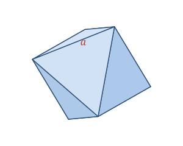

A regular octahedron is a solid built from eight identical equilateral triangles. It looks like two square pyramids glued base to base, giving it a diamond-like double-pyramid silhouette. It is one of the five Platonic solids, with all edges equal to a.
You'll recognize it as the d8 die in role-playing games, in the natural crystal shape of diamond and fluorite, and in many molecular geometries in chemistry.
A regular octahedron is defined by a single edge length a.
| Faces | 8 (equilateral triangles) |
|---|---|
| Edges | 12 |
| Vertices | 6 |
| Edge length | a |
As a Platonic solid it satisfies Euler's formula: V − E + F = 6 − 12 + 8 = 2.
Volume V = (√2 ⁄ 3)·a³
Surface area SA = 2√3 · a²
Take a regular octahedron with edge a = 4.
V = (√2 ⁄ 3)·a³ = (√2 ⁄ 3)(64) ≈ 30.17
SA = 2√3 · a² = 2√3 × 16 = 32√3 ≈ 55.43
The octahedron is the "dual" of the cube: put a point at the center of each of a cube's six faces, connect them, and you get a perfect octahedron — and doing the same to an octahedron gives back a cube.